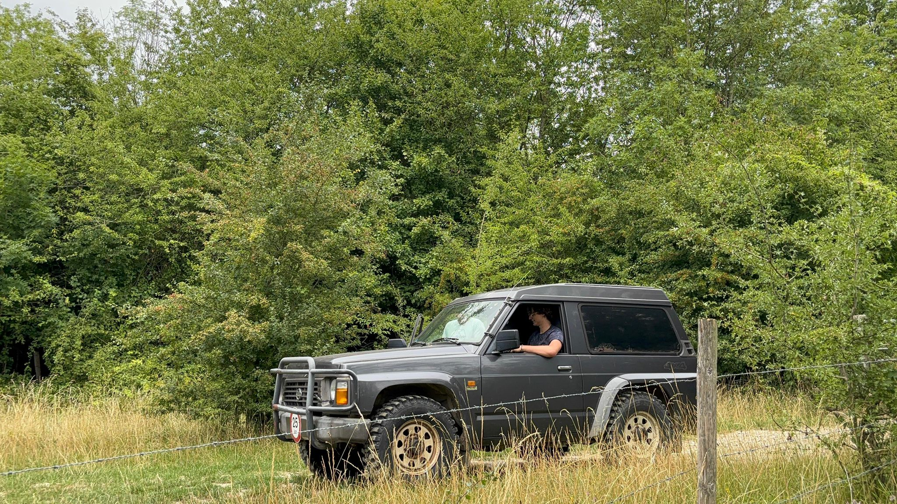

Heeft u vragen over onze wijnen, wilt u een bezoek plannen of bent u gewoon nieuwsgierig? Neem gerust contact met ons op. Wij reageren zo snel mogelijk.
Wahlwillerweg [NUMMER]
6286 [POSTCODE] Wahlwiller
Zuid-Limburg, Nederland
[NIEUWE INFO: Telefoonnummer]
Bereikbaar op werkdagen
[NIEUWE INFO: tijden]
Volg ons voor nieuws en updates
[NIEUWE INFO NODIG: Beschrijf de route met de auto, vanuit welke steden, via welke wegen. Parkeren is gratis mogelijk bij de wijngaard.]
[NIEUWE INFO NODIG: Beschrijf de OV-mogelijkheden, dichtstbijzijnde bushalte of treinstation en loopafstand naar de wijngaard.]
De wijngaard is ook goed bereikbaar per fiets via de prachtige fietspaden door het Gulpdal. [NIEUWE INFO NODIG: Voeg fietsroute toe.]
[NIEUWE INFO NODIG: Beschrijf parkeermogelijkheden – gratis, hoeveel plaatsen, waar precies.]

Foto omgeving
images/bereikbaarheid.jpg